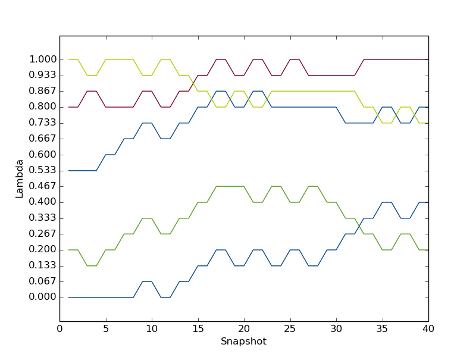

This tutorial is an extension of the task carried out in the ProtoMS workshops, giving a flavour of the utilities of ProtoMS. Basic instructions for performing simulations are available in the workshop (and copied below) - here we will run longer simulations than we did in the workshop and focus more on the analysis of simulations.
To come back to the tutorial index, click here.
ethane.pdb - the structure of an ethane molecule in PDB format. It can be downloaded here.methanol.pdb - the structure of a methanol molecule in PDB format. It can be downloaded here.
We will start with a single topology approach. While conceptually this may be simpler, there are some careful choices that need to be made in setup, as you will see. The simplest way to start the setup of the simulation is by typing the following:
python2.7 $PROTOMSHOME/protoms.py -s singletopology -l ethane.pdb methanol.pdb
How to choose corresponding atoms
You'll notice that protoms.py asks us to define the corresponding atoms for the mutation of ethane to methanol. At this point it helps to visualise the perturbation taking place:
H02 H06 H02 H06
| | | |
Ethane : H03-C01--C05-H07 ==> H03-C01--O05-DUM : Methanol
λ=0.0 | | | | λ=1.0
H04 H08 H04 DUM
Clearly there are some atoms that have obvious partners when making the transformation. C01, H02, H03 and H04 should remain with their same names. Likewise, C05 should be transformed to O05. Dummy atoms can be defined simply by pressing enter instead of typing in a corresponding atom name. Choice of which hydrogens to perturb to dummy atoms can be made freely as all three atoms of the methyl group are degenerate. An obvious choice is to transform H06 to H06.
Final setup
After correctly defining corresponding atoms we should be ready to run a simulation. You should see files for a simulation of the free leg (in water) and the gas phase leg of the relative free energy cycle.
The simulations will run 5 m equilibration steps and 40 m production steps for each of the 16 λ-values.
Output will be printed to files every 100 k moves and Hamiltonian replica-exchanges between neighbouring λ-values will be attempted every 200 k moves. You can read more about the files that the setup script creates further down on this page.
Take a look at your created system (for example, ethane.pdb and ethane_box.pdb) in VMD. It should look like this:
We have two choices for how to perform our perturbations. We can either change both the electrostatic and van der Waals parameters of our molecule simultaneously (i.e. a 'combined' perturbation), or separately (i.e. separate 'ele' and 'vdw' simulations). Here we'll try both and compare the results. To run the free and gas phase legs of the simulation with the combined perturbation protocol you need to execute:
mpirun -np 16 $PROTOMSHOME/protoms3 run_comb_free.cmd mpirun -np 16 $PROTOMSHOME/protoms3 run_comb_gas.cmd
Otherwise to run the two legs using the separate perturbation protocol you need to execute:
mpirun -np 16 $PROTOMSHOME/protoms3 run_ele_free.cmd mpirun -np 16 $PROTOMSHOME/protoms3 run_ele_gas.cmd mpirun -np 16 $PROTOMSHOME/protoms3 run_vdw_free.cmd mpirun -np 16 $PROTOMSHOME/protoms3 run_vdw_gas.cmdThis is most conveniently done on a computer cluster. If you run all 6 calculations they will take approximately 6 h to complete.
python2.7 $PROTOMSHOME/tools/calc_series.py -f out_comb_free/lam-0.000/resultsto look at time series for the free leg at λ=0.0. In the wizard that appears you can type
total followed by enter twice. This will plot the total energy as a function of simulation snapshot. It should look something like this:
The program will also give you some indicating on the statistical equilibration of this time series. You should see equilibration fairly early on - in fact in this case we can see that the average total energy is fairly flat throughout, and the simulation is treated as equilibrated all the way through.
Thus, we have to discard very little of the simulation when we compute the free energy. If you wish, you can check this by visualising a running or moving average too - type python2.7 $PROTOMSHOME/tools/calc_series.py -h
to see instructions for using the options to do this.
Finally, we said we would compare the combined, ele and vdw protocols so perform the same analysis on the results files in out_ele_free and out_vdw_free. You should again see equilibration very near the beginning of the simulation - this perturbation is fairly 'well behaved'.
Next, we will analyse how effective the λ replica exchange was. Open up the simulation info file in your favourite text editor, e.g.:
nano out_comb_free/lam-0.000/info
Somewhere near the bottom of the file you will find a line that looks something like this:
Attempted/successful lambda swaps: 1502 1139 ( 75.832%)
Indicating that the overall acceptance rate for the λ swaps was around 75% - quite high, indicating a good overlap between neighbouring λ-windows. If you find the same statistics for the separate ele and vdw perturbations you may find that they show even higher ratios (though to be certain of this we would need to run more repeats). Now let's have a look at the paths of individual replicas during the simulation:
python2.7 $PROTOMSHOME/tools/calc_replicapath.py -f out_comb_free/lam-*/results -p 1.0 0.8 0.533 0.2 0.0 -o replica_path_comb.png
You'll see something like this:

As you can see, there seems to be fairly good sampling of different λ-windows by each initial replica. In fact, by the end of the simulation, each replica has covered almost all of λ-space, which is ideal.
We would hope that the separate ele and vdw perturbations would show the same process, but it's a good idea to check. Before going further, run the same analysis for the out_ele_free and out_vdw_free results.
Remember to name the outputted graph something different every time. You should also perform the same analyses for the gas phase simulations, but we won't cover them here.
Finally, let's estimate the free energy. We will do this using a variety of methods - Thermodynamic Integration (TI), Bennett's acceptance ratio (BAR) and multistate BAR (MBAR). Remember that with the a single topology protocol we need to evaluate the free energy change for both the free leg and the gas phase leg, plugging the results into the sum identified by the thermodynamic cycle below:
For the calculations, let's start with the combined protocol. As we've seen, the simulation equilibrates fairly rapidly, so let's skip only the first 10 blocks of data:
python2.7 $PROTOMSHOME/tools/calc_dg.py -d out_comb_free/ -s 10 python2.7 $PROTOMSHOME/tools/calc_dg.py -d out_comb_gas/ -s 10
We end up with a ΔG for the free leg of roughly -3.1 kcal mol-1, and for the gas leg of +3.1 kcal mol-1, giving a total ΔΔG between methanol and ethane of -6.2 kcal mol-1. Repeat the same calculations for the separate ele and vdw protocols:
python2.7 $PROTOMSHOME/tools/calc_dg.py -d out_ele_free/ -s 10 python2.7 $PROTOMSHOME/tools/calc_dg.py -d out_vdw_free/ -s 10 python2.7 $PROTOMSHOME/tools/calc_dg.py -d out_ele_gas/ -s 10 python2.7 $PROTOMSHOME/tools/calc_dg.py -d out_vdw_gas/ -s 10
This time the free legs (the sum of the ele and vdw contributions) have a ΔG of -2.8 kcal mol-1 and the gas legs of +3.1 kcal mol-1, giving a total ΔΔG of -5.9 kcal mol-1. So you can see that although the end results are very similar, there are some slight differences between the protocols, particularly in the solvated (free) leg.
Now, let's try the equivalent dual topology simulation, which you should find simpler to set up.
To set up the dual topology simulation type:
python2.7 $PROTOMSHOME/protoms.py -s dualtopology -l ethane.pdb methanol.pdb
You'll notice that only a single run_free.cmd input file is produced, as we no longer need gas phase simulations.
Running the simulation will take approximately 2-3 hours on a cluster. Like the single topology calculation it can be performed as follows:
mpirun -np 16 $PROTOMSHOME/protoms3 run_free.cmd
After the runs are complete you should carry out the analysis similarly to the single topology simulation above. You'll obtain a free energy change for the free leg of roughly -6.9 kcal mol-1. Remember that for dual topology this corresponds directly to the ΔΔG between the two solutes.
Our value of -6.9 kcal mol-1 is also remarkably close to the experimental ΔΔG for these solutes, which is 6.90 kcal mol-1. However, to be certain of our results and obtain reliable error bars we need to perform more repeats, and potentially investigate other protocols.
python2.7 $PROTOMSHOME/protoms.py --fullhelp...you can see that there are many different options you can define manually to explore your simulation further! A few examples are given below.
--nequil - this controls the number of equilibration steps--nprod - this controls the number of production stepspython2.7 $PROTOMSHOME/protoms.py -s singletopology -l ethane.pdb methanol.pdb --nequil 50E6 --nprod 100E6you will run 50 m equilibration steps and 100 m production steps (instead of the 5 m and 40 m that is default). This may be useful to see if our simulation really is equilibrated after a short number of moves, as it seems above.
--lambdas. By typing (for instance):
python2.7 $PROTOMSHOME/protoms.py -s singletopology -l ethane.pdb methanol.pdb --lambdas 12you will initiate 12 λ-values rather than default 16. You can also give individual λ-values to the argument. For instance:
python2.7 $PROTOMSHOME/protoms.py -s singletopology -l ethane.pdb methanol.pdb --lambdas 0.00 0.05 0.10 0.20 0.30 0.40 0.50 0.60 0.70 0.80 0.90 0.95 1.00
will create a total of 13 lambda windows using the spacing defined.
--repeats or just -r.
by typing for instance:
python2.7 $PROTOMSHOME/protoms.py -s singletopology -l ethane.pdb methanol.pdb -r 5you will create 5 input files that will create 5 output folders. But remember, you also need to execute ProtoMS 5 times with the different input files. The output folders will be named e.g.
out1_comb_free, out2_comb_free...
By default, protoms.py solvates systems using the TIP4P water model. Simulations can also be performed with the TIP3P model by using the --watmodel flag:
python2.7 $PROTOMSHOME/protoms.py -s singletopology -l ethane.pdb methanol.pdb --watmodel tip3pAlternatively you may wish to solvate the solute using a different pre-equilibrated water box, or create a box of different dimensions. This can be done using the individual solvate script in the tools section.
Most of these files will be created for both the single and dual topology simulations unless otherwise stated. Additionally, those for ethane are also created for methanol unless otherwise stated.
ethane.prepi = the z-matrix and atom types of ethane in Amber format (created by Amber)ethane.frcmod = additional parameters not in GAFF (created by Amber)ethane.zmat = the z-matrix of ethane used to sample it in the MC simulationethane.tem = the complete template (force field) file for the ligand in ProtoMS formatethane_box.pdb = the box of water solvating ethane in the simulation (note that this is identical to methanol_box.pdb)single_cmap.dat = the corresponding atoms between ethane and methanol (single topology only)ethtmeo_comb.tem = the combined template file for ethane and methanol, for the combined perturbation protocol (single topology only)ethtmeo_ele.tem = the combined template file for ethane and methanol, for the separate ele perturbation protocol (single topology only)ethtmeo_vdw.tem = the combined template file for ethane and methanol, for the separate vdw perturbation protocol (single topology only)run_comb_free.cmd = the ProtoMS input file for the combined protocol free leg (see also run_ele_free.cmd and run_vdw_free.cmd for the separate protocol) (single topology only) run_comb_gas.cmd = the ProtoMS input file for the combined protocol gas phase leg (see also run_ele_gas.cmd and run_vdw_gas.cmd for the separate protocol) (single topology only) eth-meo.tem = the combined template file for ethane and methanol (dual topology only)run_free.cmd = the ProtoMS input file for the free leg (dual topology only)
dualtopology1 1 2 synctrans syncrot softcore1 solute 1 softcore2 solute 2 softcoreparams coul 1 delta 0.2 deltacoul 2.0 power 6 soft66
lambdare 200000 0.000 0.067 0.133 0.200 0.267 0.333 0.400 0.467 0.533 0.600 0.667 0.733 0.800 0.867 0.933 1.000
protoms.py. Unless otherwise stated, all setup commands should be performed for both the ethane and methanol solutes.
ethane.pdb contains a directive, telling ProtoMS the name of the solute. The line should read HEADER ETH and can be added using whichever editor you feel most comfortable with. For example:
sed -i "1iHEADER ETH" ethane.pdb
python2.7 $PROTOMSHOME/tools/ambertools.py -f ethane.pdb -n ETH
This will execute the AmberTools programs antechamber and parmchk, creating the files ethane.prepi and ethane.frcmod, respectively. If the ligand was charged, we could specify that here using the -c flag.
python2.7 $PROTOMSHOME/tools/build_template.py -p ethane.prepi -f ethane.frcmod -o ethane.tem -n ETH
This will create the files ethane.tem (the ProtoMS template file) and ethane.zmat (the ProtoMS z-matrix). It is a good idea to check the latter to see if the script has defined the molecule properly.
python2.7 $PROTOMSHOME/tools/solvate.py -b $PROTOMSHOME/data/wbox_tip4p.pdb -s ethane.pdb -o ethane_box.pdb
As standard this will create a box of mimimum 10 A distance between the solute and the edge of the box. The padding of the box from the solute can be increased using the --padding or -p option.
Likewise a different pre-equilibrated box can be used by specifying the location using the -b flag. The output is written to the file ethane_box.pdb. As only one box is needed for our simulation, we don't need a methanol_box.pdb, but if you make one then ensure it is identical to that for ethane.
python2.7 $PROTOMSHOME/tools/make_single.py -t0 ethane.tem -t1 methanol.tem -p0 ethane.pdb -p1 methanol.pdb -m single_cmap.dat -o ethtmeo
creating ethtmeo_comb.tem, ethtmeo_ele.tem and ethtmeo_vdw.tem. Note that this also requires the single_cmap.dat text file, which contains a table (2 columns, n rows) of corresponding ethane atoms in methanol. Dummies are denoted by DUM.
Now we have all the files except the ProtoMS input file itself. As you may have noticed, this step-by-step procedure create a few files that protoms.py does not generate, but these often contain logs of the exact procedures performed, so they may be useful to you.
python2.7 $PROTOMSHOME/tools/generate_input.py -s singletopology -l ethane.pdb methanol.pdb -t ethtmeo_comb.tem -lw ethane_box.pdb -o run_comb
creating run_comb_free.cmd and run_comb_gas.cmd. You will need to run generate_input.py again to create equivalent inputs for the separate ele and vdw perturbations.